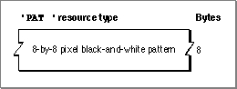

Legacy Document
Important: The information in this document is obsolete and should not be used for new development.
Important: The information in this document is obsolete and should not be used for new development.


The Pattern Resource
You can use a pattern resource to define a single bit pattern. A pattern resource is a resource of type'PAT '. All pattern resources that you create must have resource ID numbers greater than 128.To retrieve the bit pattern stored in a pattern resource, you can use the
GetPatternfunction, which is described on page 3-122. You can then specify that bit pattern for a fill pattern, background pattern, or pen pattern.A pattern resource is defined to be of type
hex String[8]; every bit represents a pixel in the 8-by-8 pixel pattern. If you examine the compiled version of a pattern resource, as represented in Figure 3-29, you find that it contains 8 bytes of information that define the 8-by-8 pixel square of the pattern.Figure 3-29 Format of a compiled pattern (
'PAT ') resource